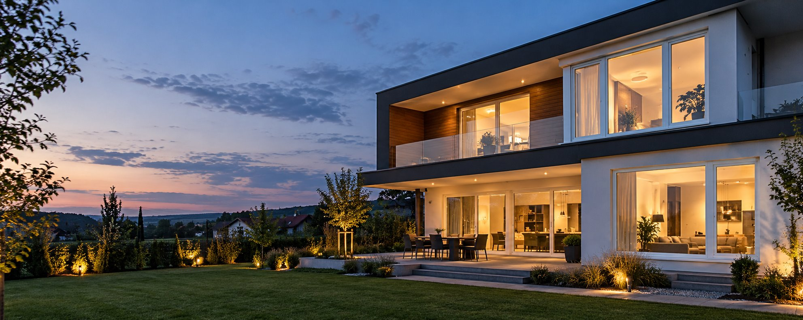

Contact
Hai să discutăm despre proiectul tău.
Poți suna direct sau poți completa formularul. Mesajul va fi pregătit pentru trimitere în WhatsApp.
- Telefon
- 0744 913 295
- Adresă
- Bulevardul Primăverii 1
Iași

Contact
Poți suna direct sau poți completa formularul. Mesajul va fi pregătit pentru trimitere în WhatsApp.
